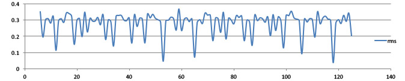
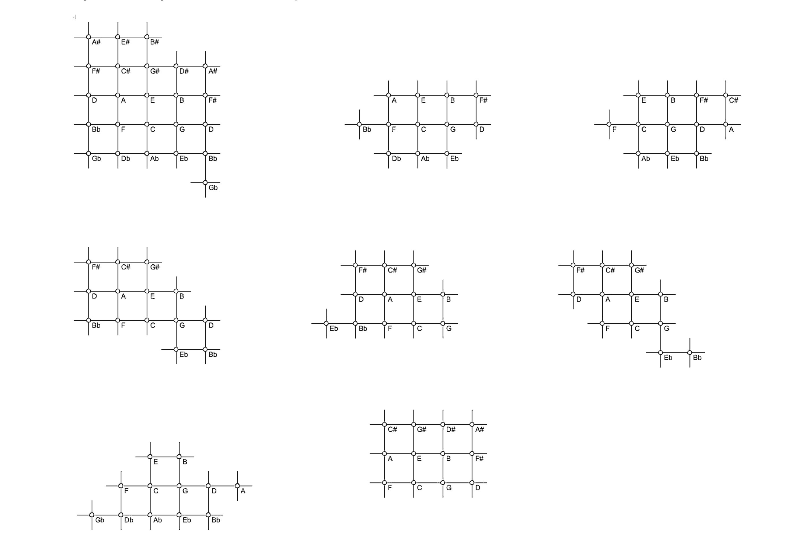

Your browser doesn't support the features required by impress.js, so you are presented with a simplified version of this presentation.
For the best experience please use the latest Chrome, Safari or Firefox browser.
Heretius (1498)
{kind=link}
Perfect and imperfect consonances shown as intervals within an octave of the diatonic scale. The equidistant horizontal lines seem to indicate a division of the octave into twelve equal semitones and a proper logarithmic understanding of pitch. The arcs of the fifth (Dyapente) and the forth (Dyatesseron) should meet at sol.
Fogliano (1529)
{kind=link}
The syntonic diatonic scale (including B and Bb) is indicated by the arcs above the chromatic scale. The arcs below indicate how the other notes of the chromatic scale can be reached from the notes of the diatonic scale. The full scale has 14 pitches, because D and Bb are ambiguous. The ambiguous pitches are separated by a syntonic comma. The scale is identical to a scale given by Salinas 1571.
Fogliano (1529)
{kind=link}
The numbering added to the ratios seems to indicate the order by which the positions on the monochord of the notes of the chromatic scale can be determined. This process begins with the note B (natural). However, this works only, if the whole string is divided into 30 equal parts in advance, which also determines the position of the midpoint c, which is number 11 of Fogliano's construction.
Zarlino (1562)
{kind=link}
{kind=link}
{kind=link}
{kind=link}
Keyboard with 19 keys per octave. Each black key of the modern piano corresponds to a black and a white key. Furthermore, there are extra white keys between the semitones b-c and e-f.
It is Zarlino's intention to provide a tone system that combines the diatonic, chromatic and enharmonic genera within a syntonic context, where many major and minor thirds of the ratios 5 : 4 and 6 : 5 occur. The drawing itself does not directly explain the underlying tuning. It can be guessed by comparing it to three diagrams from the previous pages. There is no split key for the second degree of the scale, which seems to imply that the tuning is based on the temperament of the underlying diatonic scale in which the syntonic comma is distributed over the seven pitches.
Salinas (1577)
{kind=link}
Chromatic scale of 14 pitch classes per octave. There are two ambiguous pitches D and b. #E should be read as Eb: it is a chromatic semitone (25:24) lower than E. There are five regular chromatic semitones 25:24 and six regular diatonic semitones 16:15, the ratio of f#-g however is 27:25 instead. The scale is a subset of Salina's scale of 24 pitch classes [46]. The larger intervals of the scale are analysed in a triangle, which substitutes Boethius's system of arcs and uses fewer lines to label the same number of relationships. The names of the intervals can be found directly below the point of intersection of the related oblique lines.
{kind=link}
Salinas (1577)
{kind=link}
Chromatic scale of 24 pitch classes per octave. The indicated string lengths admit its interpretation in terms of Pythagorean fifths (3:2) and syntonic major thirds (5:4). There are four different pitches for F#/Gb and four different pitches for A#/Bb. In the realisation in the 53-tet tuning the distance between neighboured pitches varies from 1 to 3 units.
{kind=link}
Representation of Salina's scale with 24 pitches per octave in the syntonic pitch grid. There are five notes Gb, Bb, D, F# and A# which have ambiguous pitches separated by a syntonic comma (81:80).
{kind=link}
Salina's scales interpreted in 53-tet. The outer circle shows the syntonic diatonic scale clockwise with c on top. The second circle contains the chromatic scale with 14 pitches, the third circle the chromatic scale with 22 pitches, and the inner circle the union, which is equal to the scale with 22 pitches. The size of the smallest steps varies between one and three units.
Salinas (1577)
Chromatic scale of 24 pitch classes per octave. The indicated string lengths admit its interpretation in terms of Pythagorean fifths (3:2) and syntonic major thirds (5:4). There are four different pitches for F#/Gb and four different pitches for A#/Bb. In the realisation in the 53-tet tuning the distance between neighboured pitches varies from 1 to 3 units.
Keppler (1620)
{kind=link}
The ratios defining this syntonic chromatic scale of 12 pitches per octave are: Semitonium 16:15, Limma 135:128, Diesis 25:24. We found no earlier syntonic chromatic scale with 12 pitch classes. The syntonic chromatic scales suggested by Fogliano (1529) and Salinas (1577) had at least 14 pitches per octave.
Mersenne (1636)
{kind=link}
Syntonic chromatic scale of twelve notes arranged on a circle. It has four different semitones:
Chromatic semitones: 25:24 and 135:128
Diatonic semitones: 16:15 and 27:25.
The arrangement of the notes on the circle reflects a logarithmic understanding of pitch. However, the angles are neither equal to 30° (12-tet) nor do they express the four different sizes of the semitones.
The diagram is a complete analysis of the scale, where for each pair of notes (except for the semitones) both possible ratios on the connecting line are indicated.
This diagram was probably inspired by a similar diagram for the syntonic diatonic scale by Johannes Lippius (1612).
Newton (1665)
{kind=link}
Comparison of a syntonic chromatic scale with the 12-tempered equal tuning (12-tet). The first column of the table contains syntonic ratios, the last column tone names beginning at G. The second column contains string lengths on a string of 720 units length. The third column contains the base 10 logarithms of the values from the second column. The fourth column contains base 10 logarithms of the string lengths of the same string divided geometrically (12-tet). The values form an arithmetic sequence with common difference 0.025086. The fifth column contains the corresponding 12-tet string lengths. The sixth column shows the size of the syntonic intervals in terms of 12-tet semitones. These values are entirely correct. The given six decimal places result in a precision of 0.0001 Cent.
Newton (1665)
{kind=link}
Approximations of Newton's syntonic chromatic scale with equally tempered scales for different divisions of the octave. The values for the interesting divisions into 53, 612 and 29 parts are entirely correct, i.e., Newton's syntonic ratios are best expressed as multiples of the related unit interval with the indicated numbers. For example, the major whole tone G-A is 4.928/29 octaves, so the major whole tone in 29-tet measures 5 units.
The diagram below shows the quality of the n-tet approximations for the syntonic diatonic scale for n = 5, ..., 125. Minima indicate best approximations. The numbers n = 12, 53, 118 and 612 (not shown) have minima that are smaller than all previous values. The incomplete column, 59, is the worst choice for n.

{kind=link}
Holder (1694/1731)
{kind=link}
I: Syntonic diatonic scale with a minor tone C-D together with the surrounding chromatic scale, C-C#-D-Eb-E-F-F#-G-G#-A-Bb-B-C. The chromatic semitones are all the same ratio 25:24, so that there are three diatonic semitones 27:25 and four diatonic semitones 16:15 in the scale.
II-IV: It is shown how the diatonic scale is distorted if the same set of pitch classes is used in a different key. The D-minor scale (II) has a large semitone A-Bb (27:25) and two consecutive minor tones Bb-C-D. The D-major scale (III) has a large semitone F#-G. The C#-major scale, however, has many inaccurate intervals.
Major triads in Holder's chromatic scale
{kind=link}
{kind=link}
Chromatic scale of twelve pitch classes in a grid. With F at the top, down left is the direction of fifths (V), down right is the direction of major thirds III), so that the horizontal direction indicates minor thirds down. The diagram uses German notation, where H stands for B and B for B-flat. The sharps Fis, Cis, Gis and Dis are written as Fs, Cs, Gs and Ds. Note the enharmonic mistake at the bottom; B should be A-sharp. In the syntonic tuning, the compact arrangement with three rows of three fifths generates four different semitones: chromatic semitones 25:24 and 138:25, diatonic semitones 16:15 and 27:25.
{kind=link}
Kepler 1619
Mersenne 1636 (circular diagram)
{kind=link}
Newton 1665
Holder 1694
Syntonic chromatic scales: analysis
{kind=link}
Euler 1739
Synopsis: Syntonic chromatic scales
 Salinas 24 Mersenne 1 Newton Salinas 14 Mersenne 2 Holder Keppler Euler{kind=link}
Synopsis: C-major scale as a part of the syntonic chromatic scale
{kind=link}
Oettingen (1916)
{kind=link}
Syntonic tone system of 53 pitch classes per octave. The configuration is symmetric around D. Oettingen divided the octave into 1000 equal parts. Therefore, cent values are obtained by multiplying the numbers by 1.2. The structure of the scale is identical to the one we used in a program to compare the various syntonic chromatic scales. It has three smallest steps 81:80, 2048:2025 and 3125:3072 which measure 21.5 cent, 19.55 cent and 29.6 cent respectively.
Salmon (1705)

Syntonic diatonic scale embedded into chromatic scales that use the semitones 16:15, 17:16, 18:17, 19:18 and 20:19. The ratios 18:17 and 20:19 stand for chromatic semitones, and 17:16 and 19:18 for diatonic semitones. The chromatic semitone 18:17 is greater than the diatonic semitone 19:18. Salmon's chromatic scale has five different semitones, but the difference between the largest and the smallest semitone is smaller than in the syntonic chromatic scales based on Pythagorean fifths and syntonic thirds only. This means that Salmon's scale is closer to 12-tet than the syntonic chromatic scales.
Fludd (1618)
{kind=link}
Mechanical tool used for transposition on the lute. The full circle comprises three octaves. The radial as well as the angular direction are organised logarithmically, so that equal distance corresponds to equal musical intervals. Vincenzo Galilei (1581) also used three octaves for the full circle in order to describe the modal system of Ptolemy.
Beeckman (1614)
{kind=link}
Chromatic scale of 12 pitch classes per octave. According to Beeckman it is inspired by Simon Stevin's division of the octave into 12 equal semitones.. If this scale were an accurate approximation of the 12-tempered equal tuning, the differences between consecutive numbers would be monotone increasing. However, the ratios of the semitones vary between 1.0451 (=177.67/170) corresponding to 90.8 cent and 1.0702 (122/114) corresponding to 117.4 cent. Therefore, the ratios of the whole tones vary from about 1.11 corresponding to 180.7 cent to 1.14 corresponding to 226.8 cent. In other words, their sizes vary by almost a quartertone. A closer analysis of the scale reveals that the maximum deviation for tritoni is 118 cent, and for fifths and fourths 99 cent.
Beeckman's chromatic scale: analysis
{kind=link}
The matrix shows the cent values of the intervals defined by all pairs of pitch classes of Beeckman's chromatic scale. The intervals consisting of the same number of semitones are on diagonals and distinguished by colours. The size of the fourths (five semitones, on the blue diagonal) varies between 450 cent and 549.2 cent. The lower matrix indicates the corresponding deviations in cent from the intervals defined by the first row with respect to ut = 0.
Zarlino (1588)
{kind=link}
Construction of the positions of the frets on a lute in 12-tet tuning with a mesolabio. The vertical legs of the similar right triangles — the string lengths — form a geometric progression resulting in equal semitone steps. The defining angle of the mesolabio is adjusted mechanically, so that the string is halved after 12 steps.
Zarlino (1588)
{kind=link}
Twelve semitones of the ratio 18:17 are smaller than an octave. The related geometric progressions, 18n and 17n, are shown on a monochord. The difference is 12.5 cent, which is 53% of a Pythagorean comma. The tuning was proposed by Vincenzo Galilei [1581, 49].